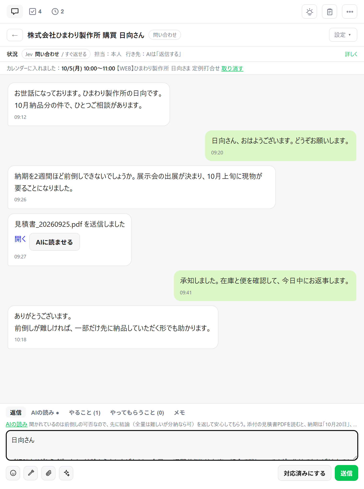
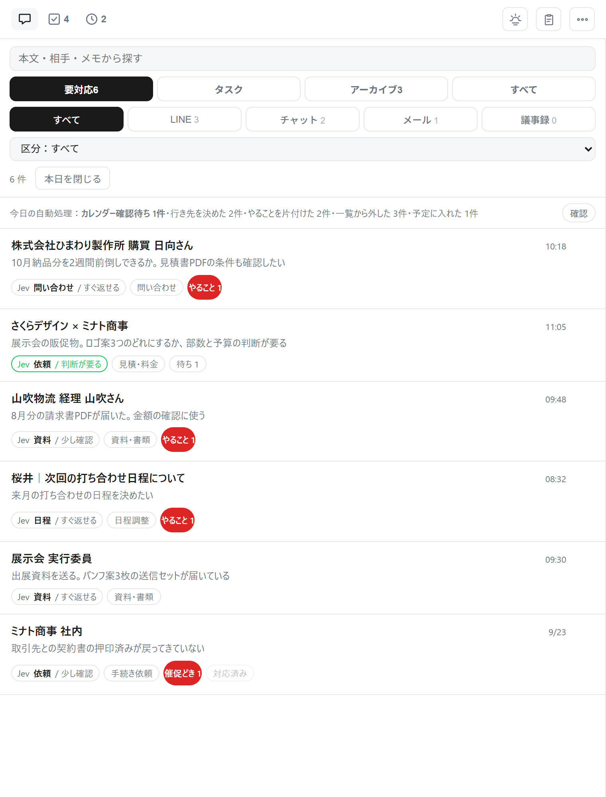
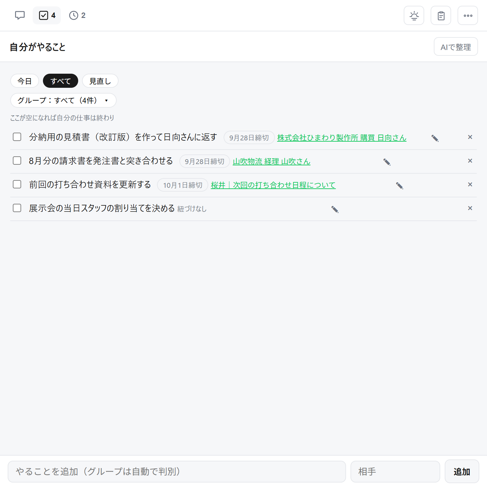

返信の準備はAI。送るのは、私。
LINE・チャットワーク・メールの連絡が1か所に集まり、届いた時点でAIが読んで、要点と返信の下書きを済ませておく「連絡の受信箱」です。必ず「これ欲しかった」と言われるので、「これほし」と名付けました。

一つでも当てはまったら、このページはあなた向けです。
置いておいたら、忘れていた。気づくのは催促が来てから。
返した瞬間に「やること」と期日が残る。忘れても、受信箱が覚えている気持ちは楽になるが、重めのタスクは残り続けて、テンションが下がる。
朝いちばんに「今日返すもの」だけが先頭に並ぶ過去のやり取りや資料を確認してから回答するので、返事に時間がかかる。
AIが先に過去の会話と資料を読み、要点と下書きを用意する相手がAIで作った文章や資料は長くて濃く、読み解くのに時間がかかる。
要点3行にしてから見せる。判断だけすればいい連絡のたびに、AIへコピペしてアップロードする役割が増えた。
入口ごとに直接つなぐ。コピペもアップロードもいらないAIの言っていること・やっていることが追えなくなり、確かめずに投げてしまう。
AIがやったことは履歴に残る。送るボタンは、人だけが押す相手もAIで書き、AIで資料を作る。だからラリーは速く、1通は濃く、入口は増え続ける。返す側だけが、人のままです。
ラリーが速い。AIが書くから送る側は疲れない。返せばすぐ次が来て、届く数が増える
1通が濃い。長くて抜けがなくて、読み解くのに時間がかかる。判断の前に「読む」が積み上がる
窓口が多い。相手の数だけ入口があり、入口ごとにAIをつなぐ手間まで増える
全部読んで、判断して、返す。
速さも、濃さも、入口の数も、こちらは変わっていない。
人が全部読んで、判断して、返す。その前提が崩れた。
だから、解決策もAI。ただし、送るのは人。
3つの動作に畳んであります。入ってくる、取りに行く、返すと残る。
届いたものは自動で受信箱に集まり、AIが振り分けて、PDFや画像も読んでおきます。コピペも、アップロードも、要りません。一覧に並ぶのは「まだ返していないものだけ」。

受信箱はAIのブラウザの中で開きます。開いている会話を、AIがそのまま読める。過去のやり取り、届いた資料、頼んだ仕事を踏まえて、「あの資料のあの話」を前提にした下書きが出ます。必要な資料は、AIが置き場まで取りに行きます。
1つのAIに全部を任せません。判定は軽いAI、読み取りと下書きは別のAI、批評はまた別のAI。仕事ごとに使い分けます。
返事を送った瞬間に、「自分のやること」「相手にやってもらうこと」「催促どき」が会話ごとに残ります。相手待ちのものは確認日に戻ってきて、催促の文案までAIが用意する。誰に何をいつまでに、が消えません。

画面のやり取りは、すべて架空のデータです。「APIでつなげられる」入口と置き場は、使っているものを伺ってから、設置のときにつなぎます。
受信箱の骨組みは同じで、つなぐ入口・振り分けの基準・返事の書き方・催促のタイミングを、仕事に合わせて変えます。
入ってくる → AIが読んで下書き → 人が送る → 残る
いまはテスト期間です。この期間に入っていただく方は、設定の費用だけで始められます。
使っている連絡手段と、返信・依頼の流れを伺って、つなぎます。作って動かしている本人が設置します。連携先のサービスの利用料が別にかかる場合は、事前にご説明します。
入口をつなぐ → 受信箱を開く → 最初の返事を一緒に送る、まで。特別な準備は要りません。
売り込みはしません。使っている連絡手段と、返信・依頼の流れを伺って、合うかどうかから一緒に考えます。